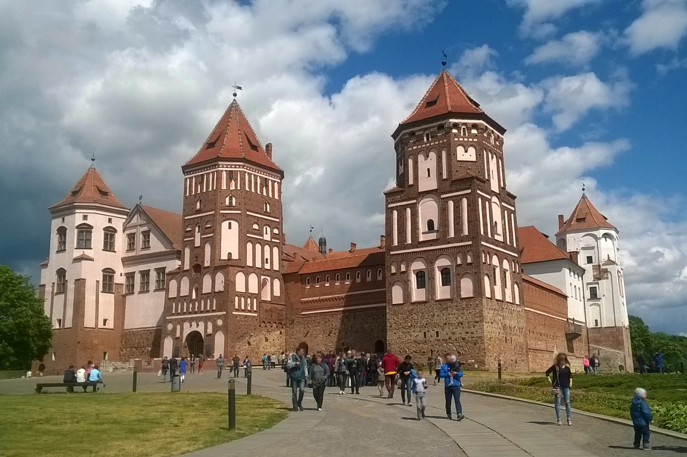
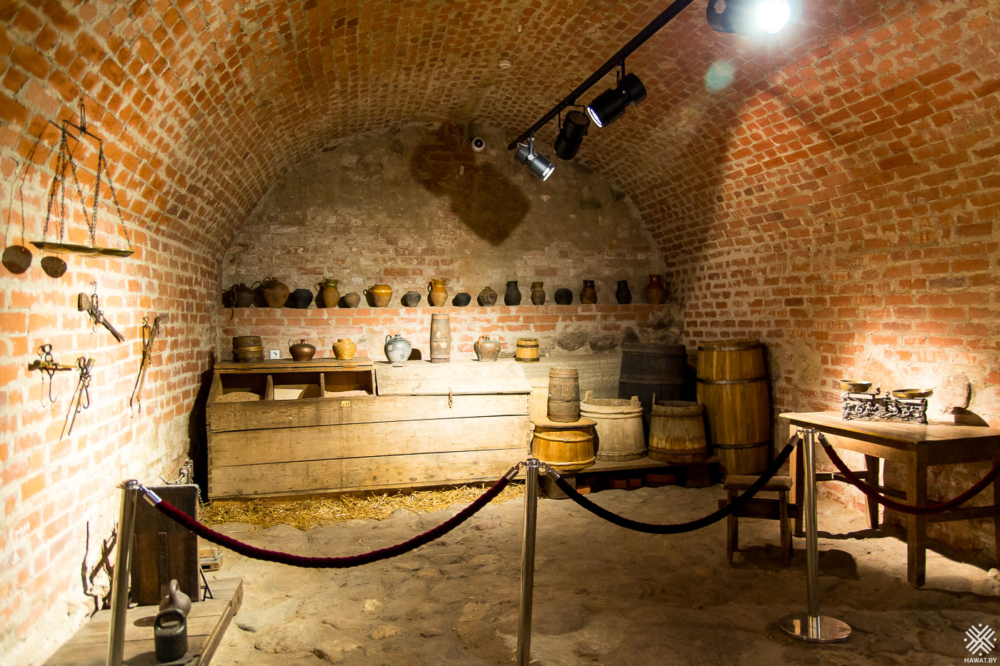

Мирский замок


Мирский замок является одной из важнейших туристических
достопримечательностей Беларуси, выдающимся оборонным сооружением XVI
столетия, занесенным в Список всемирного наследия ЮНЕСКО. Мирский замковый
комплекс (Мирский замок) — выдающийся пример оборонного зодчества XVI
века. Он расположен в поселке Мир в Гродненской области Беларуси. Самые
ранние сооружения выполнены в готическом стиле и относятся к XVI столетию.
Этот белорусский замок был заложен в начале XVI века князем Илиничем. В
1568 году замок перешел во владение Николая Радзивилла, который достроил
его в стиле ренессанса. Вдоль восточной и северной стен замка был возведен
трехэтажный дворец. Вокруг построены земляные валы с бастионами на углах и
рвом с водой. В северной части разбит сад в итальянском стиле.
Искусственное озеро было создано на юге. Во время Наполеоновских войн
замок серьезно пострадал и стоял в запустении более столетия. Все еще
находясь в руках богатой семьи Радзивиллов, он был восстановлен в начале
XIX века и продан Николаю Святополк-Мирскому в 1895 году. Его сын начал
восстановление замка, которое проходило под руководством архитектора
Теодора Бурше. После войны в замке жили те местные жители, дома которых
были разрушены во время войны. Потом здесь располагался военный гарнизон.
В 2000 году ЮНЕСКО внесла Мирский замок в Список Всемирного культурного и
природного наследия. Удачное сочетание архитектурных стилей готики,
барокко и ренессанса делает Мирский замок одним из наиболее впечатляющих
замков в Европе. В декабре 2010 года после активных реставрационных работ
Мирский замок был открыт для туристов. Однако обновление замкового
комплекс "Мир" продолжается и в настоящее время. Существуют планы
восстановления итальянского ренессансного сада, английского парка и пруда,
реставрации дворца Святополк-Мирских. В 2013 году была завершена
реставрация памятника архитектуры.